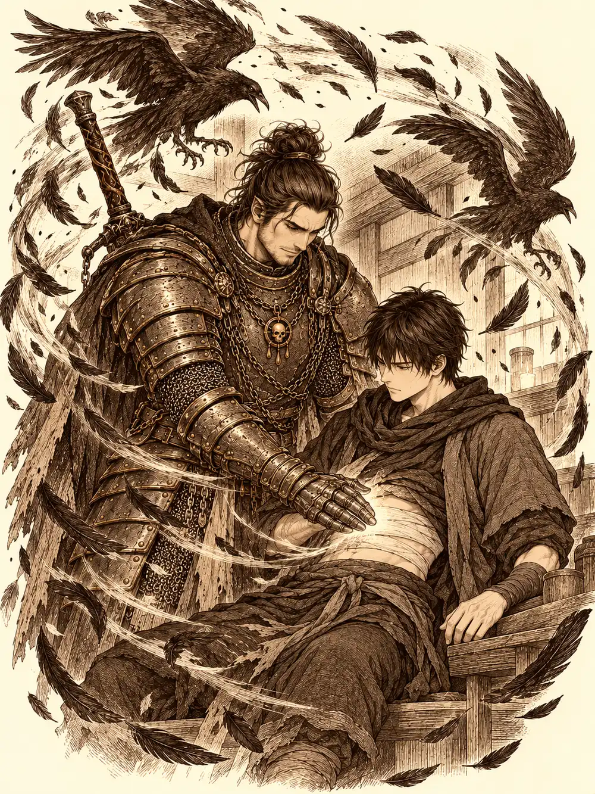

Capítulo 115
En la mesa de Fumuki
Libro VII · La Reina Cuervo
Gur volvió a la base empapado, con el pelo pegado a la frente y la satisfacción de quien ha cortado árboles toda la mañana y se ha dado después unos largos en el lago. La noche anterior lo habían traído los cuervos desde un lugar gris donde una mujer con hilos negros guardaba a un clérigo dentro de una bola, y él había decidido no pensar demasiado en ello. Al entrar se encontró a Shizuka de pie sobre una silla, con un dedo extendido hacia Gluglu como quien apunta con un arco.
La niña estaba probando un truco nuevo, uno que mataba con solo señalar, y el pobre pez muerto era el único blanco que no protestaba. Gur quiso ayudar. Lo que quedó de Gluglu después de su maza cabía en varios cubos. Lor Miau abrió un ojo, suspiró y movió la cola, y los pedazos se juntaron otra vez a regañadientes. Al pez le faltaba ahora un ojo, una aleta y buena parte de una pierna, y se arrastraba por el suelo dejando un rastro que olía a pescado rancio.
Así lo encontró Banzo. Se quedó mirando el charco, la maza y la cara de inocencia de los dos.
"Ha sido él", dijo Shizuka.
"Ha sido ella".
El goliat no tenía ganas de regañar a nadie. Traía algo que enseñarles: una joya roja con el símbolo del shogun, prendida al pecho. Rua se la había dado. A partir de ahora iba a vigilarla de cerca, más centrado que antes, porque había nobles que hablaban de acabar con los cazadores y alguno, como aquel que Gur llamaba Diplomacia, podía pasarse de listo.
"Al que se pase de listo, me llamas y le cortamos la coleta".
Calista y Gelbreak entraron poco después, tras varios días sin dejarse ver. Calista dijo que había resuelto el conflicto que tenía con el drow, y no añadió nada más. Kurobane llegó por el portal buscando a Guxi y, mientras los demás sacaban a Gluglu de debajo de una estantería caída, contó a su manera lo que le había pasado: se había despertado con mal pie, había perdido otra vez la pelea por su propio cuerpo, y Osuray, que no era tan buena persona como él, había hecho que el estoque de Calista lo atravesara. La tritón no lo desmintió.
Entonces llamaron a la puerta. Una mujer bien vestida, con aire de sirvienta más que de dama, traía un sobre.
"Vengo a buscar al señorito Banzo".
Todas las cabezas se giraron hacia el goliat a la vez. Incluso Gluglu, con el único ojo que le quedaba. Banzo se cuadró como un soldado y preguntó si era algo de Rua.
"Es de la señorita Fumuki".
Calista le dio un codazo de complicidad. La noble del funeral, la que había compartido comida con él y le había prometido una cena cuando pasara el luto. La señorita Fumuki era imprevisible, explicó la sirvienta, y le gustaban las cosas al momento; iba a cenar y quería que Banzo la acompañara. Podía traer a los amigos que quisiera.
Gur dijo que él tenía hambre. Shizuka arrugó la nariz: en las casas de nobles servían platos diminutos, ella prefería la taberna de Ushi, donde pedías arroz y te ponían una bola así de grande. Se quedó en la base con Gluglu. Gelbreak puso la cara de quien no tiene ningún deseo de ir, miró a Calista, y cuando ella dijo que sí, se encogió de hombros. Kurobane también fue, aunque habría preferido estar solo.
Por el camino, Calista se rezagó junto al ninja y sacó de su bolsa el libro de la cripta, todavía envuelto en el jirón de su vestido.
"No soy capaz de entenderlo y ni siquiera me ha dado tiempo a estudiarlo". Le mostró la mano de las arañas. "Estoy un poco saturada con muchos frentes. Voy a tener que ceder en esta lucha. Sé que tú harás buen uso de él. Del otro libro tengo varias traducciones, pero este ni lo he abierto".
Kurobane miró la tela, la miró a ella, y con un giro de su capa corta el libro desapareció.
"Enviaré informes".
La casa de Fumuki olía a incienso y a comida cara. Había jardines con fuentes, salones con lámparas de papel y cuatro sirvientas inmóviles junto a la entrada, que solo se movían para hacer una reverencia. En un rincón tocaban los músicos: un arpa, un instrumento de cuerdas tendido como una mesa, una bailarina que giraba despacio y un recitador de voz grave.
Lo primero que notaron al cruzar la puerta fue que la música se les metía en el pecho. Al poco latía al mismo ritmo que sus corazones, y con cada compás algo se aflojaba por dentro: la desconfianza, las ganas de pelea, la rigidez de los hombros. Se volvían más amables sin proponérselo. Calista, que siempre miraba los detalles, se fijó en las manos de los músicos. Llevaban anillos que despedían una luz azulada.
Las sirvientas los invitaron a picar, a pasear, a mirar la biblioteca. Kurobane se refugió entre los libros y encontró uno de recetas. Gur se colocó en fila entre las sirvientas, imitando su postura de estatua para recibir a los invitados, y medio bailando con la música, hasta que ellas, que no podían reírse, empezaron a darle codazos. Fueron llegando nobles: una joven que miró a Gur con espanto, el pulcro Montaro, Shai, otra muchacha que no dejaba de refunfuñar. Al fin apareció la anfitriona, sonriente, frotándose las manos, y se sentó junto a Banzo.
"Señor Banzo. Me hace mucha ilusión que hayas aceptado".
La comida llegó en bandejas lacadas, y con ella el vino. Algo había en los dos. La comida despertaba un hambre que no era de comida; el vino hacía que todo el mundo pareciera más hermoso de lo que era. Banzo y Gur empezaron a mirar a los demás comensales como si los vieran por primera vez. Fumuki le dio a Banzo un bocado con sus propios palillos, y él abrió la boca mirando de reojo a sus compañeros, sin saber muy bien qué hacer. Kurobane no probó el vino. Gelbreak no probó nada: removía con los palillos unos hongos que no eran los hongos de su tierra y los olía con desconfianza. Calista comía y bebía por educación, porque rechazar lo que te ofrecen es una grosería, y cuanto más comía más calor sentía, sin entender de dónde venía.
La velada se fue deshilachando en parejas. Una mujer medio desnuda le indicó a Gur dónde estaba el baño y cerró la puerta tras ellos con el pestillo; más tarde el medio orco apareció en las cocinas, sudado y feliz, invitando a comer a las cocineras, a las que la señora no dejaba probar bocado. Shai se sentó junto a Kurobane, le sirvió vino que él no bebió y le puso la mano en la pierna. El ninja temblaba como un junco. Dentro de su cabeza, una sombra le aconsejaba relajarse.
Fumuki pidió que trajeran un sobre. De él sacó un papel pequeño con unas palabras escritas, lo dejó sobre la mesa, y la luz de los candelabros cambió a un rosa suave.
"Vamos a jugar a las preguntas. Y para que nadie pueda mentir..."
El aire se volvió denso, honesto. Todos lo sintieron cerrarse a su alrededor, menos Gelbreak, que se lo sacudió de encima como una telaraña. Fumuki lo miró enseguida.
"Y tú no mientas, que al menos sé que a ti no te ha cogido".
Las preguntas fueron de todo tipo, algunas indiscretas, algunas crueles. Cuando le tocó el turno de a quién confiaría su vida, Calista dijo que a Gelbreak, y que a quien no se la confiaría nunca era a su hermana, a Danifae. Banzo respondió lo mismo que ella sobre el drow. Fumuki comentó que ese tal Gelbreak debía de ser muy querido entre los cazadores. Gelbreak dijo que él confiaría su vida a Gur, porque destruía cosas muy deprisa, y que de los veintidós cazadores no se la confiaría a dieciocho. Si era verdad o mentira, solo él lo sabía. Gur se la confiaría a su sensei, que era pequeño y rojo y muy fuerte, aunque al final se portara mal con él. Kurobane tardó en contestar, y lo que dijo fue que aún no había formado ese vínculo con los cazadores. A quien no confiaría su vida era a un tal Maroxi.

Banzo aprovechó el juego para hacer su propia pregunta.
"¿Debe seguir Rua al frente del shogunato, o hay que elegir un nuevo shogun?".
Fumuki fue sincera porque no podía no serlo. Mientras las cosas fueran bien, Rua estaba bien. Pero si llegaba alguien con más poder que los sacara de la crisis, mejor. Rua le caía bien. Solo quería salir de aquella miseria. Montaro opinó que era una mujer buena y legítima, la viuda del shogun; cuando muriera sin descendencia, ya se elegiría a otro. Una de las jóvenes dijo que le gustaba ver a una mujer joven al mando de Kuroto. La otra, que haría lo que quisieran sus allegados.
Calista salió al jardín a mojarse la nuca en la fuente. El aroma de las flores era el mismo que el de la comida, pero ella no estaba para darse cuenta de nada; clavaba las uñas en la piedra y sentía que podía estallar en cualquier momento, de rabia o de otra cosa. Gelbreak la siguió.
"¿Qué te pasa? Estáis todos muy raros".
"¿Y a ti no?".
"A mí no me pasa nada". Se rascó la oreja. "Tengo una idea. Banzo parecía preocupado por lo de Rua. Si esta mujer tiene algo que nos sirva para que vote a su favor, querría saberlo".
Calista protestó que no podían colarse en las habitaciones. Él le recordó que podía volverse invisible. La cogió de la mano, ella le dijo que lo odiaba mucho, él le dijo que se callara, y los dos se desvanecieron.
Abrieron una puerta cerrada con unas ganzúas. Era un despacho. Calista buscaba con las manos temblorosas y los ojos se le iban a todas partes menos a los papeles. Gelbreak encontró unos documentos, los ojeó con una sonrisa y se los guardó en su bolsa sin enseñárselos.
"¿No me los vas a enseñar?".
"Quizá si te los enseño ahora la cagamos".
Sobre la mesa había frascos con líquidos rosados y verdosos. Calista levantó uno al trasluz y lo olió. Era el aroma de la comida. El del vino también.
"Tal vez lo ha puesto todo en la comida. Por eso estamos así".
El drow, que no había comido nada, olió el frasco y no supo decir a qué olía.
Fumuki se había llevado a Banzo a su habitación. Se tendió en la cama y sacó un papel en el que había escrito un poema para él.
"Se llama Siete copas. La primera copa, por tu nombre, que ya me tiemblan los labios cuando lo digo. La segunda, por tus pasos, que los busco cuando no están. La tercera, por tus manos, que aún no me han tocado. La cuarta, por tu historia, que tengo ganas de escuchar. La quinta, por lo que callas. La sexta, por lo que imagino. Y la séptima, por lo que aún no hemos hecho, pero ya he soñado".
Banzo aplaudió, sinceramente impresionado. Se sentó en el borde de la cama con los pies en la alfombra.
"¿Por qué te gusto?".
Ella habló de su fuerza, de sus tatuajes, de las cicatrices de criaturas enormes. Y él le recordó que al entrar casi no se acordaba de su nombre. ¿Era así con muchos hombres? Con los que le gustaban, dijo ella. Él admitió que ella también le gustaba. Fumuki se incorporó y lo besó.
El goliat se quedó muy quieto, rojo hasta las orejas. Al bajar la vista vio la joya roja de Rua brillándole en el pecho. Le dijo que le gustaba, de verdad, pero que antes de acostarse con ella quería conocerla un poco.
Fumuki lo aceptó. Cambió de planes con la misma rapidez con que los hacía, y salieron juntos a curiosear entre los invitados, a espiar a las parejas y a reírse de ellas. Cuando pasaron junto a la puerta del despacho, Calista y Gelbreak, invisibles, se pegaron a la pared conteniendo la respiración.
Shai, mientras tanto, acabó rodeando a Kurobane con los brazos y besándolo en la mejilla, y él se disculpó con toda la cortesía que pudo reunir: era un monje, estaba casado con su templo. Ella le dijo que aquella disciplina lo llevaría a malos sitios, que alguna vez hay que dejarse doblegar. Kurobane se sentó a meditar en el sitio más apartado que encontró, con las manos sobre las costillas que aún le dolían.
La música se apagó. Los músicos dejaron los instrumentos y, con el silencio, todos sintieron que algo se les escurría de la cabeza, como el final de una borrachera, dejándolos acalorados y con un poco de resaca. Shai pasó junto a Kurobane y le dejó una nota con su dirección.
"Cuando quieras, ven a verme. Podemos hablar".
En la puerta, Fumuki se despidió de Banzo. Esperaba que le gustaran más esas fiestas, pero la próxima vez harían lo que a él le gustase, esas pruebas suyas que le había contado. Calista le preguntó si podía llevarse la botella de vino. Fumuki le dijo que se la llevara.
Banzo se despidió de todos en la calle y echó a andar hacia palacio. Le tocaba turno.
Por el camino de vuelta, Calista le ofreció la botella a Gelbreak. Él no había probado el vino en toda la noche. Dio un trago, le pareció agradable, dio otro, y otro más.
"Hace calor aquí, ¿eh?".
Calista le quitó la botella de las manos.
En palacio, un veterano llamado Kataraki Mushido le explicó a Banzo su deber: proteger a Rua incluso a costa de su vida. Los samuráis reconocieron su collar y lo dejaron entrar en los aposentos, donde unas sirvientas peinaban a la viuda. Él anunció que vigilaría fuera; ella le pidió que se quedara dentro, porque así se sentía más segura. Mientras inspeccionaba las ventanas, al goliat se le pasó por la cabeza que el mayor peligro quizá estuviera dentro del propio palacio. No lo dijo.
En la base, un torbellino de cuervos estalló en plumas en mitad de la sala. De él salió una figura con armadura negra, cadenas y una espada que parecía hecha de sangre. Ikari y Jin tardaron en reconocerlo. Era Sirth. El clérigo puso la mano sobre el vendaje de Jin y la herida del vientre se cerró del todo. Dijo que recordaba poco, que se sentía vacío y que su magia parecía haber menguado. Paralizó a Archi, al que tomó por espía, y lo soltó en cuanto Jin respondió por él. Brindaron con sake y cerveza enana por el regreso.
Kurobane, en las montañas de Sho, puso el libro de la cripta sobre la mesa de Guxi. El artífice se protegió las manos con guantes y le lanzó dos hechizos para conocer su naturaleza. El libro se los bebió los dos, con un sonido cada vez más inquietante. Cuando volvieron a cubrirlo parecía más grande, y las letras de su título habían cambiado.
Revisando el correo de la base, Guxi se quedó paralizado ante una carta: su maestro estaba vivo. Le confesó a Banzo que diez años atrás lo habían acusado de un fraude en las cuentas, que en realidad la culpa había sido suya y que su maestro había cargado con el exilio para salvarlo. Banzo lo acompañó ante Rua. La viuda escuchó, revisó papeles y le reprochó haber callado mientras otro pagaba por él. Le dio tiempo para encontrar a su maestro, pero lo destituyó de todos sus cargos. Guxi le entregó a Banzo su collar y sus informes. Antes de recibir a un noble llamado Yasuoka, Rua ordenó que el puesto lo ocupara Calista.
Gelbreak, por su parte, fue a ver a Kurobane para averiguar si lo que el ninja llevaba dentro podía poner en peligro a Calista. Rompió una concha, tiró al suelo los adornos marinos de la casa y le ofreció tres salidas: desaparecer, dejarse matar o contarlo todo. Kurobane le habló de los siete monjes legendarios, de la venganza contra el ser que esperaba tras la Puerta y del Monasterio de las Sombras, ahora en manos del culto. El drow se marchó amenazándolo con matarlo al primer problema.
Calista encontró a Guxi en el puerto, trabajando en un barco, sin sus insignias. Él le contó lo de su maestro. Sabía dónde estaba y tenía preparada la ruta, pero dudaba que alguien quisiera acompañarlo. Calista se ofreció a ir con él y proteger el barco de las tormentas, le pasó una herramienta y corrió a la base a prepararse.